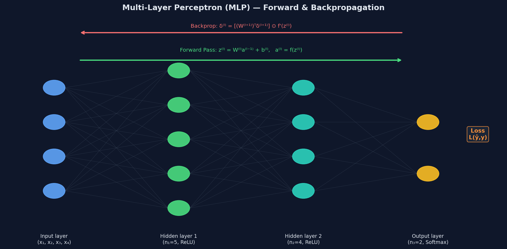
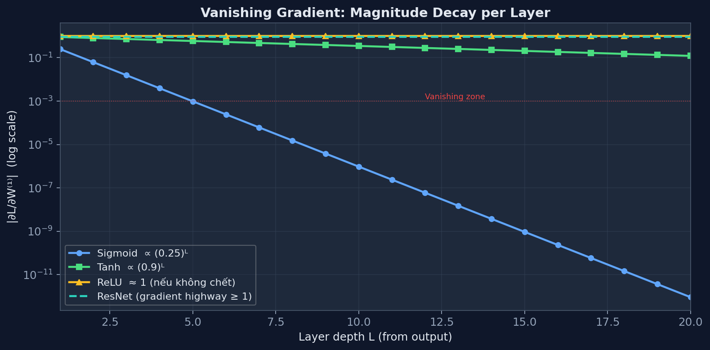
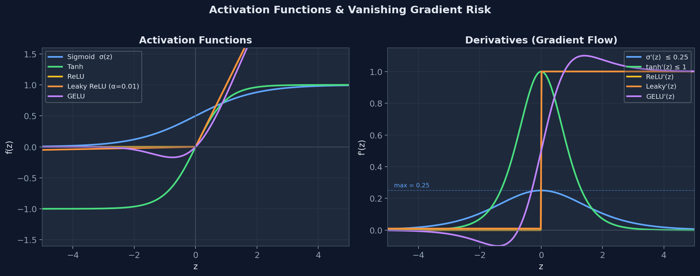
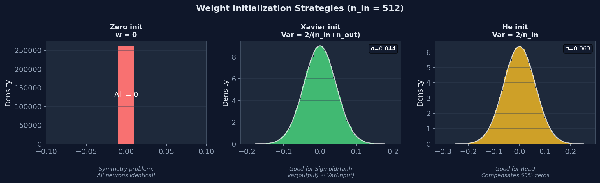
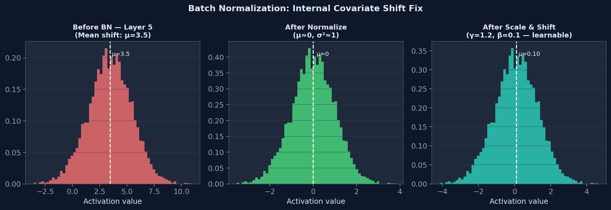
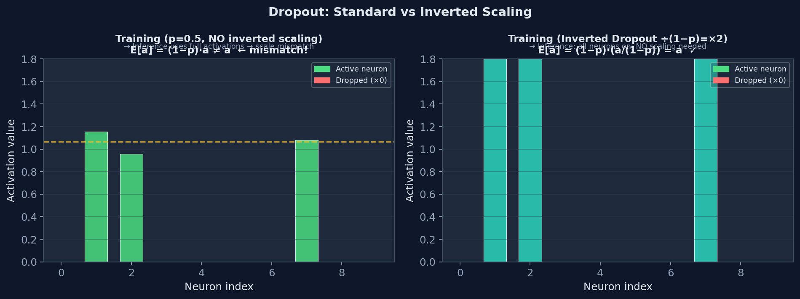
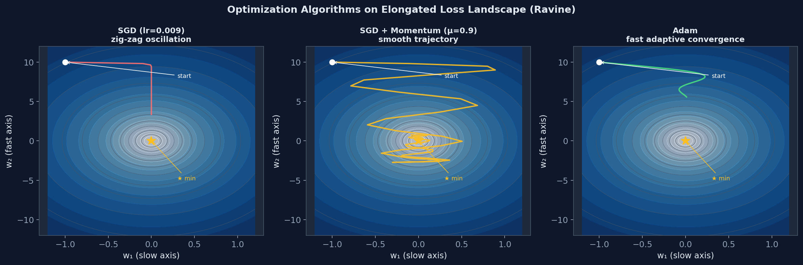
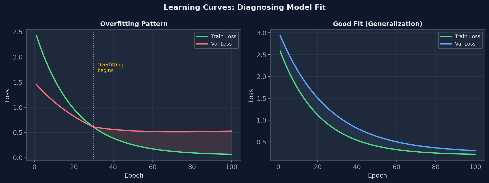

Mạng Nơ-ron Nhân tạo & Backpropagation
Từ Perceptron đơn giản đến mạng nhiều lớp và thuật toán lan truyền ngược.
Phương trình siêu phẳng quyết định: \(\mathbf{w}\cdot\mathbf{x} + b = 0\)
Chỉ cập nhật khi phân loại sai. Converges nếu dữ liệu linearly separable.
Khi dự đoán sai lệch cực độ, gradient tiệm cận 0 → học rất chậm. Giải pháp: dùng Cross-Entropy.

Hình 1 — Kiến trúc MLP: luồng Forward pass (xanh lá) và Backpropagation (đỏ). Mỗi lớp tính z⁽ˡ⁾ = W⁽ˡ⁾a⁽ˡ⁻¹⁾ + b⁽ˡ⁾, sau đó a⁽ˡ⁾ = f(z⁽ˡ⁾).
7. Backpropagation — Chain Rule Toàn Phần
Dẫn xuất gradient qua đồ thị tính toán, dạng ma trận và độ phức tạp.
Mỗi phép toán là một node. Mỗi giá trị trung gian là một edge. Backprop chính là áp dụng Chain Rule trên đồ thị này từ output ngược về input.
Với lớp \(l\): đầu vào \(\mathbf{a}^{(l-1)}\), trọng số \(\mathbf{W}^{(l)}\), pre-activation \(\mathbf{z}^{(l)} = \mathbf{W}^{(l)}\mathbf{a}^{(l-1)} + \mathbf{b}^{(l)}\), activation \(\mathbf{a}^{(l)} = f(\mathbf{z}^{(l)})\).
Định nghĩa delta (error signal) tại lớp \(l\):
| Phương trình | Công thức | Ý nghĩa |
|---|---|---|
| BP1 — delta lớp cuối | \(\boldsymbol{\delta}^{(L)} = \nabla_{\mathbf{a}}L \odot f'(\mathbf{z}^{(L)})\) | Gradient qua hàm loss và activation cuối |
| BP2 — lan truyền ngược | \(\boldsymbol{\delta}^{(l)} = \bigl[(\mathbf{W}^{(l+1)})^\top \boldsymbol{\delta}^{(l+1)}\bigr] \odot f'(\mathbf{z}^{(l)})\) | Delta lớp dưới = delta lớp trên "đi ngược" qua W, nhân với f' |
| BP3 — gradient trọng số | \(\dfrac{\partial L}{\partial \mathbf{W}^{(l)}} = \boldsymbol{\delta}^{(l)} \bigl(\mathbf{a}^{(l-1)}\bigr)^\top\) | Outer product: delta × activation đầu vào |
| BP4 — gradient bias | \(\dfrac{\partial L}{\partial \mathbf{b}^{(l)}} = \boldsymbol{\delta}^{(l)}\) | Gradient bias = delta |
Chứng minh BP2 (lan truyền ngược delta)
Theo Chain Rule:
\[ \delta_j^{(l)} = \frac{\partial L}{\partial z_j^{(l)}} = \sum_k \frac{\partial L}{\partial z_k^{(l+1)}} \cdot \frac{\partial z_k^{(l+1)}}{\partial z_j^{(l)}} \]Vì \(z_k^{(l+1)} = \sum_j W_{kj}^{(l+1)} a_j^{(l)} = \sum_j W_{kj}^{(l+1)} f(z_j^{(l)})\), nên:
\[ \frac{\partial z_k^{(l+1)}}{\partial z_j^{(l)}} = W_{kj}^{(l+1)} \cdot f'(z_j^{(l)}) \]Suy ra: \(\delta_j^{(l)} = f'(z_j^{(l)}) \sum_k W_{kj}^{(l+1)} \delta_k^{(l+1)}\), viết dạng ma trận:
\[ \boldsymbol{\delta}^{(l)} = \bigl[(\mathbf{W}^{(l+1)})^\top \boldsymbol{\delta}^{(l+1)}\bigr] \odot f'(\mathbf{z}^{(l)}) \quad \blacksquare \]Forward pass: \(O(\sum_l n_{l-1} \cdot n_l)\) — một lần nhân ma trận mỗi lớp.
Backward pass: \(O(\sum_l n_{l-1} \cdot n_l)\) — cũng một lần nhân ma trận mỗi lớp (BP2, BP3).
Tổng: khoảng 2× forward pass. Đây là lý do backprop hiệu quả hơn finite-difference \(O(|\theta| \times \text{forward})\) theo số lượng tham số.
8. Vanishing & Exploding Gradients — Phân tích Toán học
Tại sao mạng sâu khó học, và tại sao đây là vấn đề cấu trúc, không phải ngẫu nhiên.
Xét gradient của loss tại lớp đầu tiên, dùng BP2 lặp đi lặp lại:
Tích trên chứa L−1 lần nhân với \(\sigma'(\mathbf{z}^{(l)})\). Sigmoid thỏa:
Với mạng L lớp dùng Sigmoid và trọng số chuẩn hóa \(|W| \sim 1\):
\[ \left\|\frac{\partial L}{\partial \mathbf{W}^{(1)}}\right\| \lesssim \left(\frac{1}{4}\right)^{L-1} \]Với \(L=10\): gradient lớp đầu ≈ \((0.25)^9 \approx 3.8 \times 10^{-6}\) — gần như bằng 0. Lớp đầu không học được gì.
Nếu trọng số khởi tạo lớn, \(\|W^{(l)}\| > 1\), thì tích \(\prod_l \mathbf{W}^{(l)}\) tăng theo hàm mũ → gradient nổ, NaN, huấn luyện diverge.
| Tình huống | Điều kiện | Hậu quả | Giải pháp |
|---|---|---|---|
| Vanishing gradient | \(\|W\|\cdot|f'| \ll 1\) | Lớp sâu không học, mạng "cạn" hiệu quả | ReLU, Residual connections, BN |
| Exploding gradient | \(\|W\|\cdot|f'| \gg 1\) | NaN, loss diverge, không hội tụ | Gradient clipping, BN, khởi tạo cẩn thận |
Hình dung gradient là tín hiệu radio truyền từ output về input. Mỗi lớp là một trạm khuếch đại/suy giảm. Nếu gain < 1 ở mỗi trạm (Sigmoid), tín hiệu tắt dần. Nếu gain > 1 (W quá lớn), tín hiệu khuếch đại thành nhiễu.
ReLU giải quyết bằng cách đặt gain = 1 (nếu neuron active) hoặc = 0 (cut off). Không suy giảm, không khuếch đại.
Residual connections (ResNet) tạo đường tắt cho gradient — tín hiệu đi thẳng qua mà không qua trạm.
Số hạng \(\mathbf{1}\) trong ngoặc đảm bảo gradient luôn có đường đi dù \(\mathcal{F}'\) nhỏ đến đâu.

Hình 2 — Gradient magnitude giảm theo chiều sâu lớp (log scale). Sigmoid: (0.25)ᴸ → cực nhỏ sau 5 lớp. ReLU duy trì gradient ≈ 1. ResNet tạo "gradient highway" không bị suy giảm.
9. Activation Functions — So sánh & Lý do lựa chọn
Không phải "dùng gì cũng được" — mỗi hàm mang một tập đánh đổi khác nhau.
| Hàm | Công thức | Range | f'(z) tối đa | Vấn đề | Dùng khi |
|---|---|---|---|---|---|
| Sigmoid | \(\sigma(z)=\frac{1}{1+e^{-z}}\) | (0,1) | 0.25 | Vanishing grad, not zero-centered | Output layer nhị phân |
| Tanh | \(\tanh(z)=\frac{e^z-e^{-z}}{e^z+e^{-z}}\) | (-1,1) | 1.0 | Vanishing grad (nhẹ hơn) | Hidden layer nếu cần zero-centered |
| ReLU | \(\max(0,z)\) | [0,∞) | 1 (z>0) | Dying ReLU, not zero-centered | Default cho hidden layers |
| Leaky ReLU | \(\max(\alpha z,z),\ \alpha\approx0.01\) | (-∞,∞) | 1 | α là hyperparameter | Khi Dying ReLU xảy ra |
| GELU | \(z\cdot\Phi(z)\) | (-∞,∞) | ≈1.13 | Đắt hơn để tính | Transformer, BERT, GPT |

Hình 3 — Trái: giá trị hàm kích hoạt. Phải: đạo hàm (gradient). Lưu ý σ'(z) ≤ 0.25 — đây là nguồn gốc của vanishing gradient khi chain rule nhân nhiều lớp.
Khi \(z < 0\): ReLU = 0, gradient = 0. Nếu pre-activation của một neuron luôn âm (vì bias quá âm hoặc learning rate quá lớn), neuron đó không bao giờ được cập nhật nữa → "chết". Với mạng lớn, có thể 40-50% neuron bị chết.
Mặc dù Dying ReLU tồn tại, ReLU có 3 ưu điểm áp đảo: (1) gradient không bao giờ bị triệt tiêu với z>0, (2) sparse activation (50% neuron inactive) → biểu diễn tiết kiệm, (3) tính toán cực nhanh (so sánh với 0). Trong thực tế, Dying ReLU ít xảy ra nếu khởi tạo và learning rate hợp lý.
Sigmoid output ∈ (0,1) — luôn dương. Theo BP3: gradient \(\partial L/\partial W^{(l)} = \delta^{(l)}(a^{(l-1)})^\top\). Nếu tất cả \(a^{(l-1)} > 0\), thì gradient của toàn bộ hàng trong \(W^{(l)}\) cùng dấu với \(\delta^{(l)}\) → cập nhật chỉ đi theo một hướng duy nhất (zig-zag optimization, chậm).
10. Weight Initialization — Phá vỡ Đối xứng & Kiểm soát Variance
Khởi tạo sai → mạng không học được gì dù kiến trúc hoàn hảo.
Tất cả neuron trong cùng một lớp nhận cùng gradient (vì đầu vào như nhau, và theo BP3: gradient \(\propto \delta^{(l)} \cdot a^{(l-1)\top}\) — giống nhau cho mọi neuron). Sau mỗi bước update, chúng vẫn giống nhau. Mạng có \(n\) neuron hiệu quả như mạng 1 neuron — lãng phí hoàn toàn.
Giải pháp: khởi tạo ngẫu nhiên để phá vỡ đối xứng. Nhưng scale của random cũng quan trọng:
Bài toán cần giải: chọn \(\mathrm{Var}(w)\) sao cho variance của activation không bị khuếch đại hoặc triệt tiêu qua nhiều lớp.
Dẫn xuất Xavier từ đầu
Xét lớp \(l\): \(z_j = \sum_{i=1}^{n_{in}} w_{ij} a_i\). Giả sử \(a_i\) và \(w_{ij}\) độc lập, \(\mathbb{E}[a_i]=0\), \(\mathbb{E}[w_{ij}]=0\):
\[ \mathrm{Var}(z_j) = n_{in} \cdot \mathrm{Var}(w) \cdot \mathrm{Var}(a_i) \]Muốn \(\mathrm{Var}(z_j) = \mathrm{Var}(a_i)\) (giữ nguyên variance qua lớp forward):
\[ \mathrm{Var}(w) = \frac{1}{n_{in}} \]Tương tự với backward pass, ta cần \(\mathrm{Var}(w) = 1/n_{out}\). Glorot (2010) chọn trung bình hài hòa:
\[ \boxed{\mathrm{Var}(w) = \frac{2}{n_{in} + n_{out}}} \quad \Leftrightarrow \quad w \sim \mathcal{U}\!\left[-\frac{\sqrt{6}}{\sqrt{n_{in}+n_{out}}},\, \frac{\sqrt{6}}{\sqrt{n_{in}+n_{out}}}\right] \]Xavier giả định activation gần tuyến tính. ReLU loại bỏ một nửa (z<0) → variance bị giảm đi ½ so với tuyến tính. He (2015) bù lại:
| Phương pháp | Công thức | Phù hợp với | Lý do |
|---|---|---|---|
| Zeros | \(w=0\) | Không dùng | Symmetry không bị phá |
| Small random | \(\mathcal{N}(0, 0.01^2)\) | Mạng nông | Có thể vanishing ở mạng sâu |
| Xavier/Glorot | \(\mathcal{N}(0, 2/(n_{in}+n_{out}))\) | Sigmoid, Tanh | Cân bằng variance forward + backward |
| He | \(\mathcal{N}(0, 2/n_{in})\) | ReLU, Leaky ReLU | Bù cho việc ReLU loại bỏ 50% activation |

Hình 4 — Phân phối trọng số sau khởi tạo (n_in=512). Zero init: toàn bộ bằng 0 → symmetry problem. Xavier: phân phối Gaussian rộng vừa. He: rộng hơn Xavier (compensate 50% zeros của ReLU).
11. Batch Normalization — Internal Covariate Shift
Tại sao normalize từng lớp giúp huấn luyện ổn định và nhanh hơn nhiều.
Internal Covariate Shift: phân phối đầu vào của mỗi lớp thay đổi theo từng bước huấn luyện khi tham số của lớp trước được cập nhật. Lớp sau phải liên tục "thích nghi" với phân phối mới — giống như học với một moving target.
Hệ quả: phải dùng learning rate nhỏ, khởi tạo cẩn thận, huấn luyện chậm.
Với mini-batch \(\mathcal{B} = \{x_1,\ldots,x_m\}\), tại mỗi feature dimension:
\(\gamma, \beta\) là learnable parameters — cho phép mạng học phân phối tối ưu (không nhất thiết phải là \(\mathcal{N}(0,1)\) sau BN).
Lúc training: \(\mu, \sigma^2\) tính trên mini-batch → stochastic, phụ thuộc batch size.
Lúc inference: không có batch → dùng running mean và running variance tích lũy trong training bằng exponential moving average:
\[ \mu_{running} \leftarrow \alpha\,\mu_{running} + (1-\alpha)\,\mu_\mathcal{B} \]Đây là lý do tại sao BN layer có hai chế độ (model.train() vs model.eval() trong PyTorch). Quên chuyển chế độ → inference sử dụng sai statistics → model tệ hơn đột ngột.
| Góc nhìn | Giải thích |
|---|---|
| Phân phối ổn định | Mỗi lớp nhận đầu vào với \(\mu \approx 0, \sigma^2 \approx 1\) → không bị saturate, gradient không vanish |
| Cho phép LR cao hơn | Gradient chuẩn hóa tốt hơn → có thể tăng LR 10-100× mà không diverge |
| Regularization ngầm | Mỗi sample được normalize bằng batch statistics (có noise) → giống dropout nhẹ |
| Landscape smoother | BN làm loss landscape phẳng hơn → gradient descent ổn định hơn |

Hình 5 — BN 3 bước: (1) Phân phối activation trước BN — mean bị shift, variance không đều. (2) Sau normalize: μ≈0, σ²≈1. (3) Sau γ, β: mạng học lại scale và shift tối ưu, nhưng bắt đầu từ điểm chuẩn hóa.
12. Dropout — Cơ chế, Inverted Dropout, và Tại sao Nó Hoạt Động
Một kỹ thuật đơn giản nhưng hiệu lực: huấn luyện mạng như một ensemble ngầm định.
Với xác suất \(p\) (thường 0.5 cho hidden, 0.1-0.2 cho input/output), mỗi neuron được tắt (output = 0) độc lập tại mỗi bước training. Gradient qua neuron đó cũng = 0 → trọng số kết nối với nó không được cập nhật.
Training: kỳ vọng output của neuron = \((1-p) \cdot \text{output}\) (vì bị tắt với prob p).
Inference: neuron luôn bật → output = output gốc.
→ Không nhất quán: inference nhận tín hiệu lớn hơn \(1/(1-p)\) lần so với training.
Chia cho \((1-p)\) ngay trong training → inference không cần làm gì — đây là lý do tại sao PyTorch dùng inverted dropout mặc định.
| Góc nhìn | Giải thích |
|---|---|
| Co-adaptation prevention | Neuron không thể phụ thuộc vào một neuron cụ thể khác (nó có thể bị tắt bất kỳ lúc nào) → phải học các feature độc lập, robust |
| Implicit ensemble | Mỗi bước training dùng một "thinned network" khác nhau. Inference ≈ trung bình hình học của \(2^n\) sub-networks (với n neurons) |
| Noise injection | Thêm noise vào activations → regularization, giảm overfitting tương tự data augmentation |
| Sparsity | Khuyến khích biểu diễn sparse — neuron chỉ fire khi thực sự cần thiết |

Hình 6 — Inverted Dropout với p=0.5. Trái: không scale → E[ã] = 0.5a ≠ a, mismatch khi inference. Phải: chia (1−p) trong training → E[ã] = a, inference không cần thay đổi. Màu xanh = neuron active, đỏ = bị tắt.
13. Universal Approximation Theorem & Depth vs Width
Một lớp ẩn đủ rộng có thể xấp xỉ bất kỳ hàm nào — nhưng điều đó có thực sự có nghĩa không?
Với bất kỳ hàm liên tục \(f: \mathbb{R}^n \to \mathbb{R}\) và \(\epsilon > 0\), tồn tại một mạng nơ-ron một lớp ẩn với đủ nhiều neuron sao cho:
\[ \sup_{x \in K} |F(x) - f(x)| < \epsilon \]với \(K\) compact và \(F\) là output của mạng dùng hàm kích hoạt squashing (e.g. sigmoid).
- Không nói bao nhiêu neuron: có thể cần số neuron theo hàm mũ — bất khả thi trong thực tế.
- Không nói làm thế nào để tìm: gradient descent không đảm bảo hội tụ đến mạng optimal đó.
- Không nói về generalization: mạng xấp xỉ tốt trên training không có nghĩa tốt trên test. UAT là about expressiveness, không phải learnability.
| Khía cạnh | Mạng Rộng (1 lớp) | Mạng Sâu (nhiều lớp) |
|---|---|---|
| Biểu diễn hàm | Cần hàm mũ neurons cho hàm phức tạp | Số neurons polynomial — hiệu quả hơn về mặt lý thuyết |
| Cấu trúc phân cấp | Không thể tận dụng | Lớp 1: edges → lớp 2: shapes → lớp 3: objects (feature hierarchy) |
| Tái sử dụng computation | Không | Sub-network ở lớp thấp được dùng cho nhiều mục đích khác nhau |
| Optimization | Nhiều saddle points | Landscape tốt hơn (thực nghiệm) |
| Generalization | Thường kém hơn với cùng tham số | Inductive bias tốt hơn cho dữ liệu có cấu trúc phân cấp |
Mạng nông (1 lớp) giống như viết code với mọi thứ inline — có thể làm được nhưng rất dài. Mạng sâu giống như có functions: lớp thấp học "primitive operations" (edges, textures), lớp cao tái sử dụng và kết hợp thành "higher-level concepts". Điều này không chỉ tiết kiệm tham số mà còn tạo ra biểu diễn có tính compositional — phản ánh cấu trúc thật sự của thế giới.
14. SGD → Momentum → Adam — Tiến hóa của Optimization
Từ vanilla gradient descent đến adaptive learning rates — mỗi bước giải quyết một vấn đề cụ thể.
SGD cập nhật: \(w \leftarrow w - \eta \nabla L(w)\). Ba vấn đề chính:
- Oscillation: Trên "ravine" (hàm hẹp một chiều, rộng chiều kia), gradient dao động ngang nhiều trong khi tiến thẳng chậm.
- Saddle points: Gradient ≈ 0 nhưng không phải minimum — SGD bị kẹt.
- Cùng LR cho tất cả parameters: Parameter hiếm (sparse features) cần LR lớn hơn tham số dày đặc.
\(v_t\) là velocity — exponential moving average của gradient. Với \(\beta \approx 0.9\):
- Hướng gradient nhất quán → velocity tích lũy → đi nhanh hơn (exponential).
- Hướng gradient dao động → velocity triệt tiêu nhau → giảm oscillation.
- Tại saddle point: gradient ≈ 0 nhưng momentum mang theo velocity cũ → tiếp tục đi qua.
Adam = Momentum (1st moment) + RMSProp (2nd moment) + Bias Correction.
Tại sao cần Bias Correction?
Ban đầu \(m_0 = v_0 = 0\). Tại bước \(t=1\): \(m_1 = (1-\beta_1)g_1\) — nếu \(\beta_1=0.9\) thì \(m_1 = 0.1 g_1\), nhỏ hơn gradient thật 10 lần. Điều này tạo ra bias lớn ở những bước đầu.
Nhận thấy: \(\mathbb{E}[m_t] = (1-\beta_1^t)\,\mathbb{E}[g_t]\). Chia cho \((1-\beta_1^t)\) để hiệu chỉnh.
Khi \(t\) lớn: \(\beta_1^t \to 0\) → correction factor \(\to 1\) → không còn quan trọng nữa. Bias correction chỉ ảnh hưởng mạnh trong 10-20 bước đầu.
| Optimizer | Ưu điểm | Nhược điểm | Dùng khi |
|---|---|---|---|
| SGD | Đơn giản, thường tổng quát hóa tốt nhất | LR nhạy cảm, chậm hội tụ | CV (ResNet, với LR schedule) |
| SGD + Momentum | Giảm oscillation, vượt saddle points | Vẫn cần tune LR | Phổ biến cho CV |
| Adam | Hội tụ nhanh, ít tune, tốt cho sparse data | Có thể generalize kém hơn SGD, memory ×2 | NLP, sparse data, prototyping |
| AdamW | Sửa L2 regularization đúng cách cho Adam | Vẫn có vấn đề generalization | Transformer, BERT, GPT |
SGD: chạy theo hướng dốc nhất hiện tại, không nhớ đã đi đâu.
Momentum: nhớ hướng đang chạy, không đổi hướng đột ngột — như quán tính vật lý.
Adam: ngoài quán tính, còn biết mỗi chiều đường dốc bao nhiêu (\(\hat{v}_t\) đo variance) → tự điều chỉnh tốc độ: chiều dốc nhiều → đi chậm (chia cho \(\sqrt{\hat{v}_t}\) lớn), chiều dốc ít → đi nhanh.
Kết quả: Adam như xe có traction control — tự động thích nghi với địa hình.
Thực nghiệm cho thấy SGD với LR schedule phù hợp thường đạt test accuracy cao hơn Adam ở cuối training. Lý do đề xuất: Adam step size bị "adaptive" → mỗi chiều tham số học ở tốc độ khác nhau → có thể fit những pattern rất specific trong training set mà không generalize. SGD đơn giản hơn, ít "nhớ quá nhiều" về gradient landscape → implicit regularization tốt hơn.

Hình 7 — Ba thuật toán tối ưu trên "ravine" (loss landscape kéo dài theo 1 chiều). SGD: zig-zag nặng dọc trục nhanh. Momentum: quỹ đạo mượt hơn nhờ velocity. Adam: hội tụ nhanh và thẳng nhờ adaptive step size trên mỗi chiều. Dấu ★ = điểm tối ưu.
15. Bản đồ Tư duy: Kết nối các Khái niệm
Các vấn đề trong deep learning không tồn tại độc lập — chúng liên hệ chặt chẽ với nhau.
| Vấn đề | Nguyên nhân gốc | Giải pháp | Liên quan đến |
|---|---|---|---|
| Gradient vanishing | σ'(z) ≤ 0.25, tích qua L lớp → 0 | ReLU, Residual, BN | Activation choice, Architecture |
| Symmetry không phá được | Khởi tạo uniform/zero | Xavier/He random init | Expressiveness, convergence |
| Internal covariate shift | Phân phối input thay đổi theo training | Batch Normalization | Training stability, LR |
| Co-adaptation / Overfitting | Neurons phụ thuộc quá vào nhau | Dropout | Generalization, ensemble |
| Slow convergence / Oscillation | Gradient dao động, LR không phù hợp | Momentum, Adam | Optimization landscape |
| Mạng không đủ biểu diễn | Quá nông hoặc quá hẹp | Depth + Width balance | UAT, inductive bias |
- Gradient là "tiền tệ" của học: mọi kỹ thuật đều hướng đến việc giữ gradient có giá trị ở mọi lớp, mọi bước.
- Scale luôn quan trọng: activation, weight, gradient, learning rate — tất cả đều phải được kiểm soát scale để không vanish/explode.
- Stochasticity là tính năng, không phải lỗi: mini-batch noise, dropout randomness, BatchNorm variance đều có tác dụng regularization ngầm.
- Đánh đổi bias-variance xuyên suốt: depth ↑ → expressiveness ↑ nhưng optimization khó hơn; regularization ↑ → variance ↓ nhưng bias ↑.

Hình 8 — Đánh đổi Bias-Variance. Total Error = Bias² + Variance + σ²ε (noise không thể giảm). Underfitting (trái): model quá đơn giản → high bias. Overfitting (phải): quá phức tạp → high variance. Điểm vàng: minimum total error.

Hình 9 — Learning Curves để chẩn đoán model. Trái: Overfitting — train loss giảm đều nhưng val loss tăng lại sau epoch 30 (khoảng cách đỏ = generalization gap). Phải: Good fit — train/val loss song song, hội tụ cùng nhau.